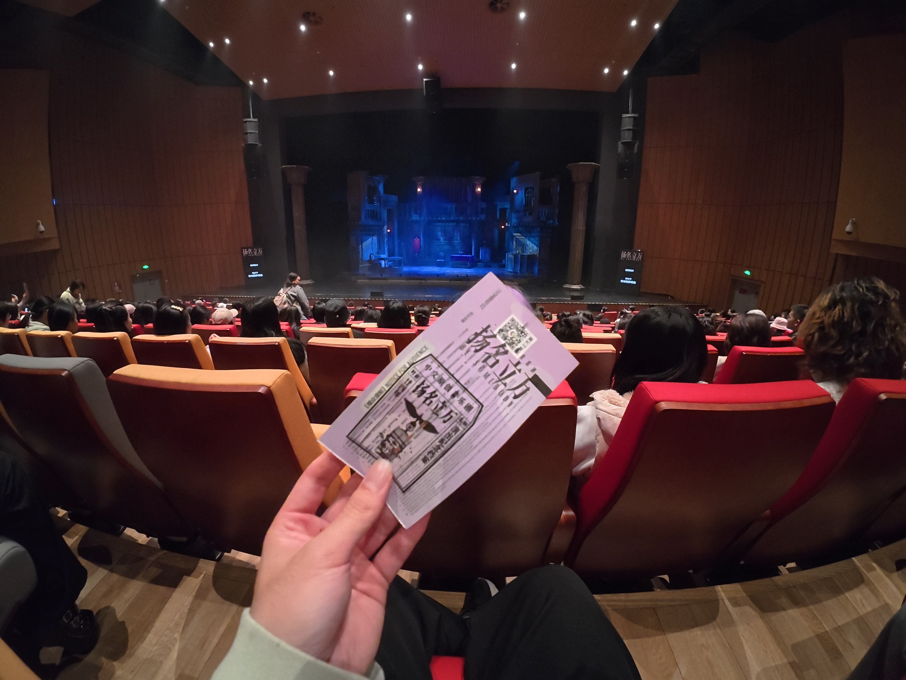

扬名立万——反差世界*|
昨晚去麻花看了场剧，按照剧粉说法，看完剧写 repo 。正好好久没更网站了，就当趁今年未完再写篇日记吧。看似写剧，但点评的意味在抒发自我，如果你看了不开心，请不要把不开心责难给我。
很幸运是这次拿到赠票，第一次（从社里得）赠票。本来还约朋友一道，不过最后我出发前他说还是到不了，我满怀期待的心平静了一些，这算是第一个意外。 于是像过去一样，我独自一人去遥远的地方看戏，选择了曲折的公交转地铁再换乘，暗暗天色里希望能多遇到之前音乐会认识的人。
昨天看过的Y和我讲“好看的”，这一下给我从8分预期水平上升到9分，我不知道自己为什么这么高度信任与欣赏未知的人与事，但，我不会告诉你现在我会给多少分1。 非常可惜，我又一次精准卡点，几乎在取票时间的末尾，然后当时又感到太渴了，那时附带上一种接下来2小时没有水喝的不安，于是在点一杯茶饮的工夫错过了合照，也几乎没和见到的同学讲话，只记得E依然高冷精致打扮，H还是活泼显得冒失。 流水帐到这里，终于，剧，开场了。

……
还记得返程一起打车的四个人默然寡言，只是碰头时说了一句：“记得小红书上评价很好…”
只能说和我的预期形成很大的反差，我听说这是电影改编还有评论说很还原，于是我以为电影叙事作品拿出来改变应当是一个大众化的题材，很好懂，但，我实在没看明白。 我知道他们要拍电影，没想到开始唱奇怪的歌，好像是在讽刺大家在拍烂片，可是这些人自己到底是要做什么，干商量半天进展有没有呢又闹矛盾又冲突，整个前半场是不是太慢了。 尤其到最后想说两个案子有关联，重要的信息说的挺大声音，可就那一两句我一下没反映过来，之后再没解释了还要继续绕，墙上画中的女孩是谁我到现在还不明白，他是军人然后长官把女儿托付之后女儿是被杀了？医生到底做啥了？不懂。甚至我不知道一个人怎么死了，更不知道这个死了有什么特殊含义没有，如果没有好端端安排他死，不安排前面那都走道枪林弹雨中的死掉真是太怪。 再归根到剧情上，总是给出一些不可思议大事件和“巧合”，比如一开始是请杀人犯做顾问，中间就在凶案发生地，最后被所谓还是南京方面包围要烧死在里面，后面然后讲圆故事的方式又含蓄，直观上就是交代得非常不清晰，让我怀疑能不能讲明白故事，是不是没有超能力巧合都不会发生。
另外有一些其实很俗套，比如批评你的记者帮你洗白，齐最后还要留在那死去，我可以理解使用这些来串联，不过在不明白主杆时，这些小旁枝显得没意思，好像既完全没花心思地敷衍，还弄点廉价的材料骗眼泪。 和这个相似的还有一点是，台词中常抛出一些趣点，观众很热烈互动，虽然个人认为没那么好笑。且不说刚开始的稍显低俗（我认为一个剧刚开始定调至少表现郑重大气为好）后面“十个九个凉”也很怪，喜剧氛围不合适，我当时更想知道接下来情况。可能我共情能力没那么强，有时候有点假理性，尤其在我不完全理解情况时，这倒是我一个隐形缺陷。 当然我认为抖包袱也可以，只是不要做得像讲相声会更有舞台感一些，剧中经常有一些故意配合，比如在桌子旁拍下肩膀说打趣的话，就像逗哏捧哏一样，我感到太浮夸了。
这会让整体表达显得很小气，不可能呈现一种大观感，仅仅就观众看着台上小戏故事。就这个剧名，我以为是丰富内容历史性剧，没想到，真给我感到很意外。按照Y的说法，就是整活反差。没想到扬名立万也能褒用贬？有点不习惯吧。
和上面像的一点，在表演上有一份刻意感，也不知道是不是有意为之，以女演员为例，她声音总是带假音，一直这样塑造是不是太虚假了，让我们并不能代入进去。
可能是我不适合中国音乐剧比较有节奏，说实话，我感到歌曲很不自然。其实外文有的也这样，但还是有很多让我感到他们在唱歌，这里的唱歌可以理解为在唱一首正常好听的歌，没有故意为了歌词或者故事什么原因变得刻意。我当时在想，中文不如就编一部民谣主打的剧，简简单单，讲个故事就好。这剧里面的歌拿出来我可能只能挑几句听吧。没必要在许多句子结尾用特殊抑扬念字断得太古怪，像说话不像，唱起来反正我时不喜欢，不如先变成普通的歌，写普通的词就好，弄得诗意一些，我感到许多剧歌都是主谓宾，不知道是翻译习惯了，还是对母语丰富的表达一无所知。
总结起来，反差就在一种刻意上。演员本身我评价不了，反正人家都挺了不起，陆很认真，杂技很卖力，没有特别喜欢，只是从故事上对他们形象整体不满意。
音响效果上感到不完美，人声没有放出来，有时压在伴奏中，不知是不是耳机音乐听多了，舞台听不出来
对了，我还是有好印象的部分，灯光很好。自从我上次看彩排发现打灯很复杂，现场看剧感到编排搭配很棒，完成一个剧是一件很难的事，每一个部分都需要磨合协作。尤其前半场舞蹈部分对人物的照顾，我很享受这互相配合的光影变换。
我还想到另外一个暗流潜动的趋势，这是看最近美国好莱坞短剧市场采访启发，也许人们在短视频中会失掉更高感受，于是只用一点点细节内容上的玩梗迎合就能让一些人感到满足了，比如可能有人感到女主经历很真实，就非常喜欢，对其它触发不了自己的部分都毫无响应2，我说不上这是好是坏，只是心地里有些不安。